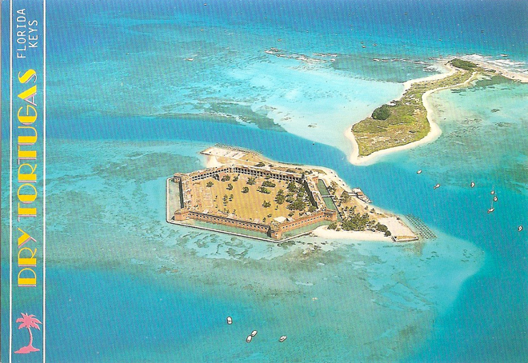
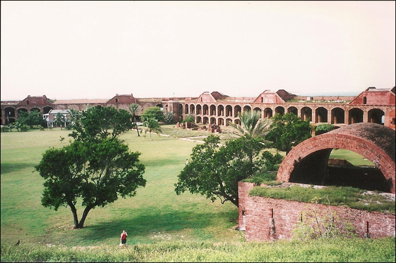
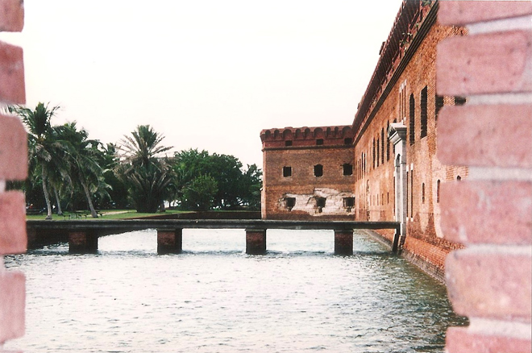
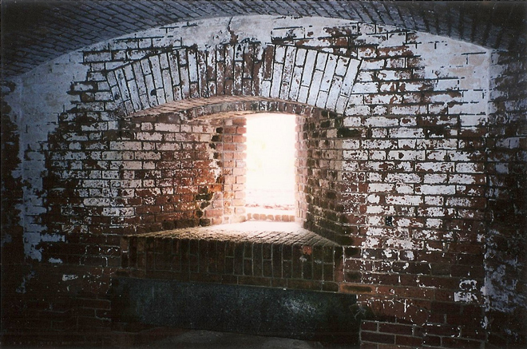
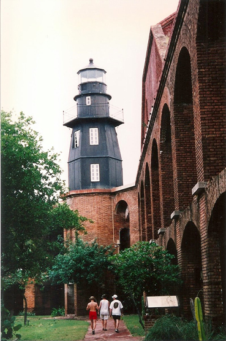
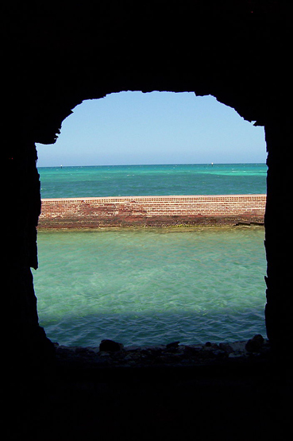
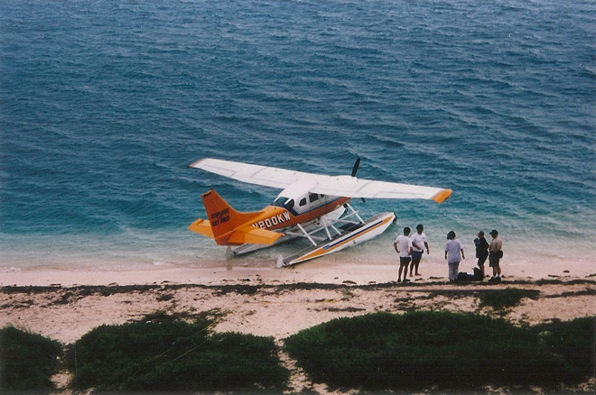
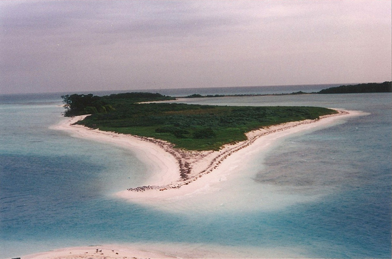

A day-long boat trip took us to the Dry Tortugas, a small group of islands, located in the Gulf of Mexico about 67 miles (108 km) west of Key West. The first Europeans to discover the islands were the Spanish in 1513, led by explorer Juan Ponce de León.
The archipelago's name derives from the lack of fresh water springs, and the presence of turtles.



The major structure on the Dry Tortugas is Fort Jefferson, a massive but unfinished coastal fortress. It is the largest brick masonry structure in the Americas and is composed of over 16 million bricks and covers 16 acres. This bastion remained in Union hands throughout the Civil War and was later used as a prison until abandoned in 1874.



